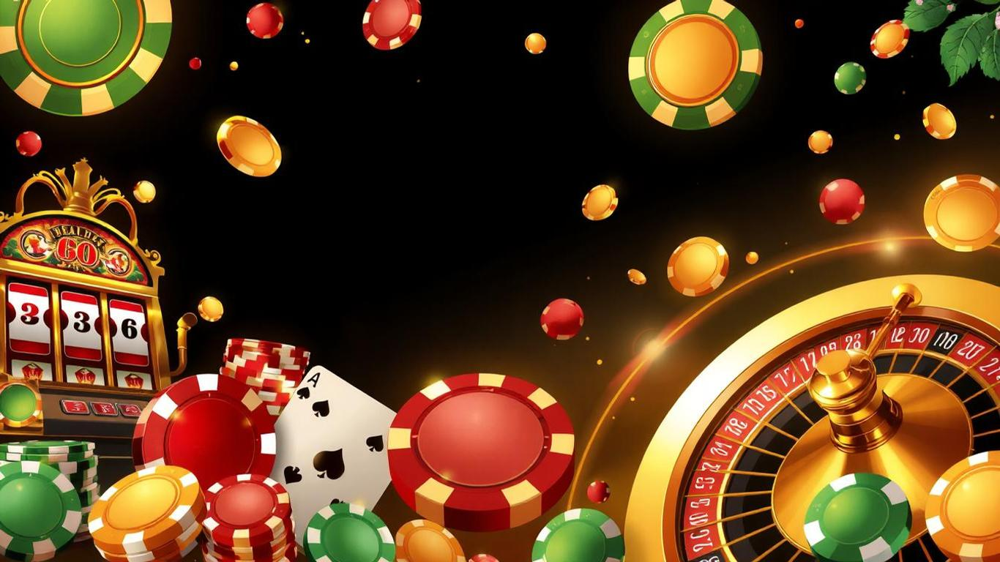

O Weiss Bet Casino destaca-se no mercado português como uma plataforma de jogo online inovadora, oferecendo uma vasta gama de jogos de mesa emocionantes. Com uma interface intuitiva e uma seleção cuidadosamente curada de jogos clássicos e modernos, o Weiss Casino proporciona uma experiência de jogo autêntica e envolvente para os entusiastas de jogos de mesa.
 Aproveitar BónusO blackjack é um dos jogos de cartas mais populares no Weiss Bet, conhecido pela sua combinação única de sorte e habilidade. Para maximizar suas chances de sucesso, é essencial dominar a estratégia básica. Isto inclui saber quando dividir pares, dobrar apostas, e quando pedir ou ficar com determinadas mãos. Por exemplo, sempre divida Ases e 8s, dobre em 11 (a menos que o dealer tenha um Ás), e fique com 17 ou mais.
A contagem de cartas, embora desafiadora, pode dar uma vantagem significativa. No Weiss Casino, jogadores avançados podem usar sistemas de contagem simples, atribuindo valores às cartas e ajustando suas apostas de acordo com o "running count".
O gerenciamento de banca é crucial no blackjack do Weiss Bet. Defina um orçamento antes de jogar e considere usar sistemas de apostas como o 1-3-2-6 para maximizar ganhos e minimizar perdas. Lembre-se sempre: nunca persiga perdas aumentando drasticamente suas apostas.
A roleta no Weiss Casino oferece uma experiência emocionante e várias estratégias para melhorar suas chances. A Estratégia de Martingale, por exemplo, envolve dobrar sua aposta após cada perda em apostas de chances iguais. No entanto, esta estratégia requer um bankroll significativo e pode atingir rapidamente os limites da mesa.
Uma alternativa menos arriscada é o Sistema D'Alembert, onde você aumenta sua aposta em uma unidade após uma perda e diminui em uma unidade após uma vitória. Esta abordagem oferece uma progressão mais suave e pode ser mais adequada para jogadores com bankrolls menores no Weiss Bet.
As apostas em setores são outra estratégia popular no Weiss Casino. Ao apostar em seções específicas da roda, como os "Vizinhos do Zero", você cobre uma área maior, aumentando potencialmente suas chances de vitória.
O bacará no Weiss Casino é conhecido por sua simplicidade e baixa vantagem da casa. A estratégia mais eficaz é apostar consistentemente no Banqueiro, que tem a menor vantagem da casa (cerca de 1,06%). Evite a tentação da aposta no Empate, que, apesar do pagamento atraente, tem uma vantagem da casa muito alta.
O gerenciamento de banca é crucial no bacará. Defina limites claros de perda e ganho antes de começar a jogar no Weiss Casino. Alguns jogadores preferem o sistema 1-3-2-4 para estruturar suas apostas, oferecendo um equilíbrio entre potencial de ganho e controle de risco.
O poker no Weiss Casino oferece uma mistura única de habilidade e sorte. A posição na mesa é crucial: jogue mais mãos quando estiver em posição tardia e seja mais seletivo em posição inicial. Use sua posição para obter informações sobre seus oponentes antes de agir.
A leitura de oponentes é uma habilidade vital no poker do Weiss Bet. Observe padrões de aposta e comportamento, prestando atenção a "tells" físicos em jogos ao vivo. Adapte sua estratégia com base nas tendências dos oponentes.
O gerenciamento de stack é outro aspecto importante. Ajuste seu estilo de jogo com base no tamanho do seu stack no Weiss Casino. Com um stack grande, você pode pressionar oponentes com stacks menores. Com um stack curto, seja mais seletivo e procure oportunidades para all-in.
Independentemente do jogo que você escolher no Weiss Casino, algumas dicas gerais podem melhorar sua experiência. Primeiro, familiarize-se completamente com as regras de cada jogo antes de apostar dinheiro real. Aproveite os jogos gratuitos ou de demonstração oferecidos pelo Weiss Bet para praticar.
O gerenciamento de bankroll é crucial. Defina um orçamento para cada sessão de jogo e adira a ele rigorosamente. Nunca jogue com dinheiro que você não pode perder e considere usar o sistema de gerenciamento de bankroll 5% para longevidade.
Aproveite os bónus oferecidos pelo Weiss Casino. Utilize o bónus de boas-vindas para aumentar seu bankroll inicial e fique atento a promoções regulares. Lembre-se sempre de ler os termos e condições dos bónus para entender os requisitos de aposta.
O Weiss Casino oferece uma variedade de métodos de pagamento seguros e convenientes para jogadores portugueses. Aqui está uma tabela com as principais opções:
|
Método de Pagamento |
Depósito Mínimo |
Levantamento Mínimo |
Tempo de Processamento |
|
Cartão de Crédito |
€10 |
€20 |
1-3 dias úteis |
|
Transferência Bancária |
€20 |
€50 |
3-5 dias úteis |
|
E-wallets |
€10 |
€20 |
Instantâneo - 24 horas |
|
Criptomoedas |
Equivalente a €10 |
Equivalente a €20 |
Instantâneo - 1 hora |
O Weiss Casino está na vanguarda da tecnologia de jogos online. Os jogos ao vivo oferecem a emoção do casino real com dealers ao vivo, permitindo interação em tempo real e recursos avançados como múltiplos ângulos de câmera.
A realidade virtual é uma área em que o Weiss Casino está explorando, visando proporcionar uma experiência verdadeiramente imersiva. Imagine usar gestos naturais para interagir com o ambiente virtual, sentindo-se como se estivesse em um casino real, tudo do conforto da sua casa.
A inteligência artificial também está sendo integrada, oferecendo análises de jogo em tempo real e dicas personalizadas baseadas no seu estilo de jogo. Além disso, a IA melhora a segurança, protegendo contra fraudes e garantindo um jogo justo.
Para os jogadores mais dedicados, o Weiss Bet oferece um programa VIP exclusivo. Ganhe pontos de fidelidade jogando seus jogos de mesa favoritos e troque-os por bónus, cashback e outros prêmios exclusivos. Os membros VIP também desfrutam de atendimento ao cliente prioritário e gerentes de conta pessoais.
Ao aplicar estas estratégias e dicas, você estará bem equipado para enfrentar os jogos de mesa no Weiss Casino com confiança. Lembre-se sempre de jogar de forma responsável, dentro dos seus limites, e acima de tudo, divirta-se.
O Weiss Bet Casino oferece uma plataforma segura, justa e emocionante para explorar o fascinante mundo dos jogos de mesa online. Com sua vasta seleção de jogos, bónus generosos e compromisso com a inovação tecnológica, o Weiss Casino posiciona-se como uma escolha de topo para os entusiastas de jogos de mesa em Portugal.
Quer seja um fã de blackjack, roleta, bacará ou poker, o Weiss Bet tem algo para todos. Aproveite as estratégias apresentadas, pratique nos jogos gratuitos e, quando se sentir confiante, mergulhe na ação dos jogos a dinheiro real. Boa sorte e que as cartas, dados e roletas estejam a seu favor no Weiss Casino!